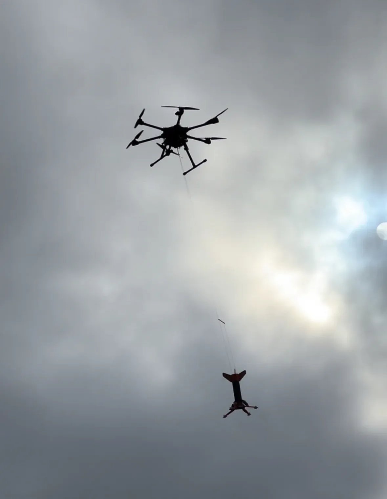
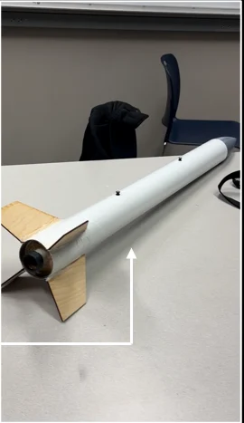
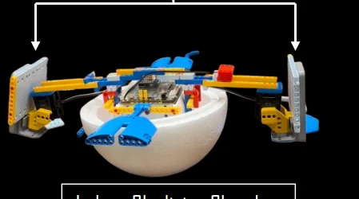
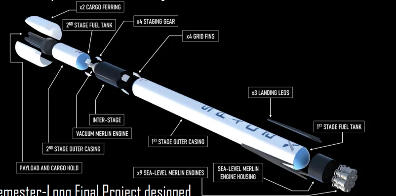
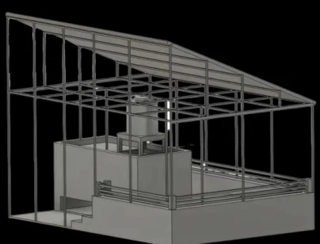
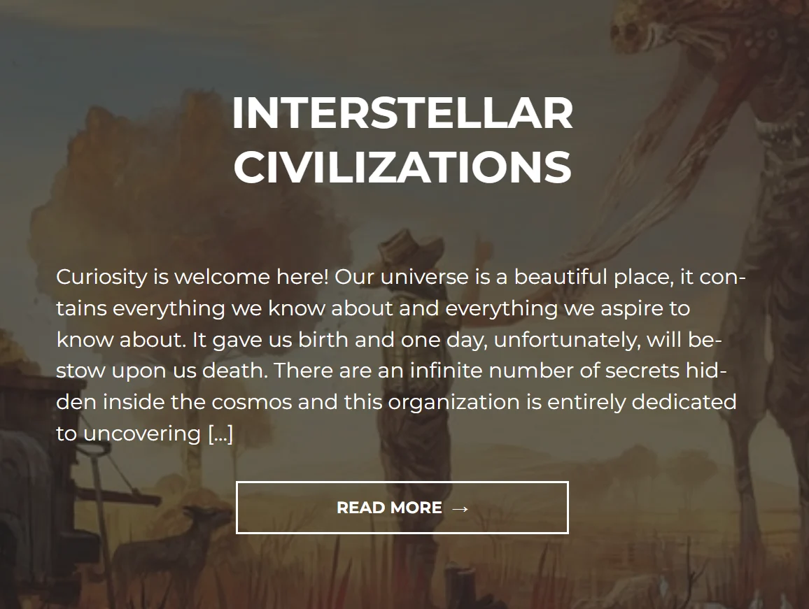

Carnegie Mellon · 2026-present
Project NOMORA
My current research with Prof. Matt Travers on hybrid robots for coastal exploration.
Projects / Research / Experience
Robots, aircraft, rockets, and a few projects that started with a question at home. Each entry covers what I worked on and my part in it.
Carnegie Mellon · 2026-present
My current research with Prof. Matt Travers on hybrid robots for coastal exploration.

Engineering internship · 2025
Mechanical design and drafting for flight controls, landing gear, and structural systems.

R&D internship · 2024
Requirements, concept design, modeling, and engineering trade studies for a counter-drone system.

UIUC · 2024-2026
Autonomy and control experiments with UAVs and ground robots in GPS-denied environments.

AIAA conference paper · 2024
A Python model evaluated against 24 flight tests and more than 25 motor thrust tests.

UIUC · 2023-2026
Leading student teams building a sounding rocket, a sustainable airplane, and a modular autonomous drone.

DoD STEM challenge · 2023
A six-person team, a dual-servo lander, and five flight tests to refine its behavior.

IPAS Challenge · 2021
Avionics and guidance design for a conceptual Mars aerial vehicle. Fourth place among 26 teams.

Individual engineering project
An OpenRocket design built with a 3D-printed nose cone and laser-cut balsa fins.

Robotics & student mentorship
A flapping mechanism inside a foam sphere, tested in an indoor skydiving chamber.

AE 140 · UIUC
A semester-long Siemens NX model with an assembly study and moving grid fins.

Independent design project
A rooftop layout, structural model, and cost analysis for a solar installation at my home in India.

UIUC · 2024
Early design and requirements work for a chemical-electrospray propellant dual-feed system.

UIUC · 2023-2024
Rocketry workshops for teachers and students, from experimental design to flight-data analysis.

Avionics engineering · 2021
Avionics concepts and design reports for a rocket motor test pad and a high-powered rocket.

Science writing · Started 2019
A physics and space website I started to make sense of the ideas I was learning.
16 entries shown
I led three student engineering teams: a high-altitude sounding rocket, a sustainable airplane, and a fully 3D-printed modular autonomous drone.
I recruited students, advised technical initiatives, and coordinated requirements, budgets, prototypes, and schedules across more than 20 students.
I assembled a six-person team to represent UIUC in a challenge to build a rocket lander for descent from 30 meters.

I built and optimized a dual-servo system, then programmed and tuned onboard avionics for burn timing and orientation. We collected inertial and altimetric data across five test flights.
Simulation and test data informed the design iterations, improving stability margins by 40% across tests.
A conceptual aerial vehicle for missions on Mars, developed for the International Planetary Aerial Systems Challenge.
I led a 14-person Avionics/GNC sub-team and helped coordinate a team of more than 50 students. We developed electronics concepts, simulated mission avionics, and designed terrain-following navigation using NASA Martian terrain data.
Our team, AEROS, ranked fourth among 26 teams internationally. This was a conceptual design competition.
An individual H/I-class rocket build completed over four months as part of an optional aerospace course.
I modeled the rocket in OpenRocket and designed it for an altitude of 2,000 feet. The build used a 3D-printed nose cone and laser-cut balsa-wood fins.
The course was structured around building a rocket toward L1 certification. My project covered the individual design, component fabrication, and final assembly.
A robot designed to oscillate vertically inside an indoor skydiving chamber.
I designed a flapping mechanism using 3D-printed and LEGO-type parts, housed inside a spherical foam ball.
I mentored students from Wolcott College Prep through the project. During chamber testing, the robot successfully oscillated freely in the airflow.
A semester-long Siemens NX project to study the design and assembly of an aerospace vehicle.
I researched Falcon 9’s layout and dimensions, made the necessary design estimates, and built a model showing its stages, engines, fairings, landing legs, and grid fins.
The assignment required a moving mechanical component. I chose to model functional grid fins and presented the completed assembly at the end of the semester.
A solar installation concept based on measured dimensions of my home in India.
I measured the roof, modeled the structure to scale in Fusion 360, and planned a solar layout around the available space.
I also performed a cost analysis and sized the proposed system to cover at least 70% of the household’s electricity needs. This was a design and analysis project.